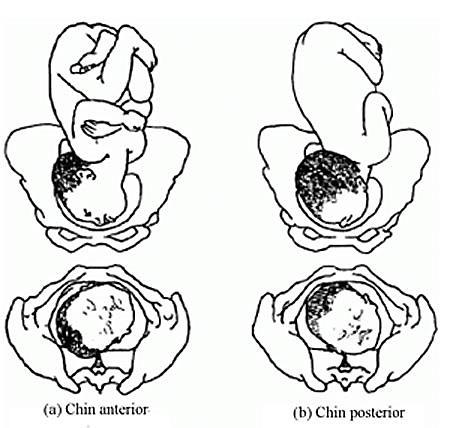
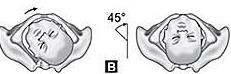

A rare cephalic malpresentation in which the fetal head is completely hyperextended, so that the occiput touches the fetal back and the chin (mentum) becomes the presenting part. The chapter covers definition, causes, the 3 position groups (Mentoanterior / Mentoposterior / Mentotransverse), diagnosis, mechanism of labor, and management rules — including why you must not convert it to vertex and why vacuum and scalp electrode are contraindicated.
By the end of this chapter, the student should be able to:
To understand the definition and etiology of this malpresentation
To be able to describe the diagnosis of face presentation
To be able to describe the management of this rare malpresentation
2 · Definition
Face Presentation is a cephalic presentation in which the head is hyperextended so that the Occiput is in contact with the fetal back and the chin (mentum) is presenting.
Face presentation is a rare malpresentation (about 0.1–0.2% of births). The denominator in face presentation is the mentum (chin), not the occiput. Because the head is hyperextended (not flexed as in vertex), engagement of the presenting part is delayed and the head negotiates the pelvis by a different set of cardinal movements.
📝 Question 1 of 5
In face presentation, what is the presenting part?
In face presentation, the head is hyperextended so that the occiput touches the fetal back and the chin (mentum) becomes the presenting part.
📝 Question 2 of 5
What is the denominator in face presentation?
The denominator in face presentation is the mentum (chin), not the occiput.
📝 Question 3 of 5
The clinical significance of this section is:
Understanding these concepts directly informs clinical management.
📝 Question 4 of 5
Which of the following best defines this condition?
A definition describes the essential nature of a condition as a deviation from normal.
📝 Question 5 of 5
The incidence of this condition is highest in which population?
Incidence varies by condition — each has its own epidemiology and risk profile.
3 · Causes
The causes of face presentation are the same as those of occipito-posterior position plus the three fetal neck-space-occupying causes listed below:
3a · Like in occipito-posterior (general)
All the fetal and maternal causes listed for OP position also apply to face presentation (see Chapter 22 for the full list):
Three fetal neck-space-occupying causes prevent flexion of the head, forcing hyperextension:
Neck tumors
Cystic hygroma
Large fetal thyroid gland
All three are space-occupying lesions in the fetal neck that physically prevent head flexion. They are typically diagnosed on antenatal ultrasound.
📝 Question 1 of 5
Which of the following is a cause specific to face presentation (not shared with OP position)?
Neck tumors, cystic hygroma, and large fetal thyroid gland are specific causes of face presentation as they physically prevent head flexion by occupying space in the fetal neck.
📝 Question 2 of 5
Which of the following is a key concept?
Understanding key concepts is fundamental to clinical management.
📝 Question 3 of 5
The clinical significance of this section is:
Understanding these concepts directly informs clinical management.
📝 Question 4 of 5
When assessing this aspect, the most important factor is:
Assessment requires integration of clinical, laboratory, and imaging findings.
📝 Question 5 of 5
In obstetric practice, this knowledge helps:
Comprehensive knowledge enables prevention, early diagnosis, and optimal management.
4 · Positions
Face presentation has three groups of positions, defined by where the mentum (chin) lies within the maternal pelvis. Each group has a direct and right/left variants:
🟢 Mentoanterior
Direct (mentum on the symphysis pubis)
Right mentoanterior
Left mentoanterior
🟡 Mentoposterior
Direct (mentum on the sacrum)
Right mentoposterior
Left mentoposterior
🔵 Mentotransverse
Right mentotransverse
Left mentotransverse
SOURCE IMAGE

Figure 1 — Two-panel medical illustration of face presentation: (a) Chin anterior (mentum oriented to the front of the maternal pelvis — favorable for vaginal delivery) and (b) Chin posterior (mentum oriented to the sacrum — generally unfavorable and often requires cesarean section). Each panel shows a lateral view of the fetus in the birth canal (top) and an inferior view of the fetal head at the pelvic outlet (bottom). Source: Provided Material (Chapter 23 — Face Presentation).
SOURCE IMAGE

Figure 2 — Educational diagram of the 45° rotational maneuver used to assess or correct fetal head orientation. Two illustrations: (left) the head lying supine cradled by two hands with a curved rotation arrow; (right) the head rotated 45° to one side, demonstrating the final position after the maneuver. This visual supports the chapter's instruction on the importance of recognizing chin orientation (anterior vs posterior) before deciding on mode of delivery. Label: B. Source: Provided Material (Chapter 23 — Face Presentation).
📝 Question 1 of 5
In mentoposterior position, the mentum is oriented toward the:
In mentoposterior (MP) position, the mentum is oriented toward the posterior pelvis (sacrum). This is generally unfavorable and often requires cesarean section.
📝 Question 2 of 5
How many named positions does face presentation have?
Face presentation has 3 groups (Mentoanterior, Mentoposterior, Mentotransverse) with a total of 8 named positions (Direct MA, RMA, LMA, Direct MP, RMP, LMP, RMT, LMT).
📝 Question 3 of 5
Which of the following is a key concept?
Understanding key concepts is fundamental to clinical management.
📝 Question 4 of 5
In obstetric practice, this knowledge helps:
Comprehensive knowledge enables prevention, early diagnosis, and optimal management.
📝 Question 5 of 5
When assessing this aspect, the most important factor is:
Assessment requires integration of clinical, laboratory, and imaging findings.
5 · Types
Type
Definition & timing
Primary face presentation
Present during pregnancy — usually due to fetal causes.
Secondary face presentation
Commonly occurs during labor, due to contracted pelvis or pendulous abdomen.
A face presentation that develops de novo during labor (secondary type) is the more common form, and is usually caused by extension of an OP position when the head encounters resistance from a contracted pelvis or a pendulous abdomen that allows the head to fall backward.
📝 Question 1 of 5
Primary face presentation is present:
Primary face presentation is present during pregnancy, usually due to fetal causes. Secondary face presentation occurs during labor, commonly due to contracted pelvis or pendulous abdomen.
📝 Question 2 of 5
Which of the following is a key concept?
Understanding key concepts is fundamental to clinical management.
📝 Question 3 of 5
When assessing this aspect, the most important factor is:
Assessment requires integration of clinical, laboratory, and imaging findings.
📝 Question 4 of 5
Classification is based on:
Most classifications combine anatomical and clinical parameters.
📝 Question 5 of 5
The clinical significance of this section is:
Understanding these concepts directly informs clinical management.
6 · Diagnosis
6.1 · Palpation
Grip
Finding in face presentation
Fundal level
Corresponds to the period of amenorrhea.
Fundal grip
The buttocks are felt as a soft, bulky, irregular non-ballotable mass.
Umbilical grip
A sulcus is felt between the extended neck & back in mentoposterior (MP) positions. The limbs are easily felt near, while the back is difficult to be felt in mentoanterior (MA) positions.
First pelvic grip
The head is usually not engaged due to deflexion.
6.2 · Ultrasound
Ultrasound is conclusive — it directly demonstrates the hyperextended fetal head with the chin as the presenting part.
6.3 · During labor
PV (vaginal examination): The mouth, nose, orbital bones and chin are felt.
Prolonged labor.
Early PROM (premature rupture of membranes).
Obstructed labor.
PV in face presentation must be performed gently. The mouth and anus can be confused — the key distinguishing features are: the mouth and malar eminences form a triangle, while the ischial tuberosities and anus are in a straight line. Traction on the mouth (mistaking it for the anus) can injure the fetal jaw.
📝 Question 1 of 5
On vaginal examination in face presentation, which structures are felt?
On PV examination in face presentation, the mouth, nose, orbital bones and chin are felt. The mouth and anus can be confused — the mouth and malar eminences form a triangle, while the ischial tuberosities and anus are in a straight line.
📝 Question 2 of 5
The clinical significance of this section is:
Understanding these concepts directly informs clinical management.
📝 Question 3 of 5
In obstetric practice, this knowledge helps:
Comprehensive knowledge enables prevention, early diagnosis, and optimal management.
📝 Question 4 of 5
The gold standard diagnostic test is:
The best diagnostic method varies by condition — some rely on imaging, others on lab tests or clinical findings.
📝 Question 5 of 5
When assessing this aspect, the most important factor is:
Assessment requires integration of clinical, laboratory, and imaging findings.
7 · Mechanism of labor
Denominator = the mentum (chin). In face presentation the mentum — not the occiput — is the reference point used to describe the cardinal movements.
7.1 · Mentoanterior position (favorable — chin is anterior)
Descent.
Engagement: by the submento-bregmatic diameter (9.5 cm).
Increased extension.
Internal rotation of chin 1/8 cycle anteriorly (chin moves to the symphysis pubis).
Head delivered by flexion.
Restitution.
External rotation.
Delayed engagement is characteristic of face presentation — it occurs late in labor because of the absence of moulding (the head cannot be compressed into a smaller presenting diameter as it can in vertex presentation).
7.2 · Mentoposterior position (unfavorable — chin is posterior)
If the chin is posterior at the onset of labor, four possible outcomes exist, depending on the type of rotation that occurs:
Outcome
What happens
Long anterior rotation
Chin rotates the long way around to anterior → delivered as mentoanterior (safe).
Deep transverse arrest
Occurs if short anterior rotation occurred and the chin arrested in the transverse diameter.
Persistent mentoposterior
Occurs if no rotation occurred — chin remains posterior.
Direct mentoposterior
Occurs if short posterior rotation occurred — chin moves a short way posteriorly instead of anteriorly.
In the absence of long anterior rotation, labor becomes obstructed — usually cesarean section is safe (and is the only safe option for the fetus and the mother).
SOURCE IMAGE
Figure 3 — Four-figure medical diagram of the cardinal movements of internal rotation during labor. Section A (first three figures) shows the fetal head at the pelvic inlet in the transverse (occipitotransverse) position and the progressive internal rotation, with 45° angle markers and curved arrows indicating the direction of rotation. Section B (fourth figure) shows the head after completion of internal rotation, now in the anterior position (occipitoanterior), ready for extension and delivery. The diagram illustrates the general principle that 45° of rotation per stage allows the head to negotiate the bony pelvis. Source: Provided Material (Chapter 23 — Face Presentation).
📝 Question 1 of 5
What is the engaging diameter in face presentation (mentoanterior)?
In mentoanterior position, the head engages by the submento-bregmatic diameter (9.5 cm). This is the favorable diameter that allows vaginal delivery.
📝 Question 2 of 5
In the absence of long anterior rotation in mentoposterior position, labor becomes:
In the absence of long anterior rotation, labor becomes obstructed and usually cesarean section is the only safe option.
📝 Question 3 of 5
Which of the following is a key concept?
Understanding key concepts is fundamental to clinical management.
📝 Question 4 of 5
In obstetric practice, this knowledge helps:
Comprehensive knowledge enables prevention, early diagnosis, and optimal management.
📝 Question 5 of 5
The clinical significance of this section is:
Understanding these concepts directly informs clinical management.
8 · Management
The management of face presentation is governed by a set of strict do's and don'ts:
8.1 · Do not's (contraindicated maneuvers)
1. Don't try to convert face to vertex presentation. Internal version / manual conversion is contraindicated — it can cause uterine rupture, cord prolapse, and fetal trauma.
2. Don't apply vacuum extractor. The vacuum cup cannot be applied to a face (no scalp, no firm engagement surface). Attempting it can cause serious fetal injury.
3. Don't apply internal scalp electrode. The fetal scalp electrode (FSE) is a fetal monitoring device applied to the scalp — in face presentation there is no accessible scalp, and applying it to the face is contraindicated.
8.2 · Do's (recommended management)
Wait for spontaneous rotation and delivery. Patience is the cornerstone of face-presentation management — the mentum has a high chance of rotating anteriorly with descent.
Consider large episiotomy if vaginal delivery occurs — to prevent perineal laceration as the face emerges by flexion under the symphysis.
Epidural analgesia if labor is prolonged — to allow the parturient to tolerate the longer labor and assist rotation.
Mentoanterior: you may use forceps extraction — once the chin is anterior and the head is low, low-cavity forceps can assist delivery.
8.3 · When labor becomes obstructed
For persistent mentoposterior, deep transverse arrest, and direct mentoposterior: labor becomes obstructed and CS (cesarean section) is done. These three outcomes of MP position cannot deliver vaginally and represent the surgical indications in face presentation.
A face presentation that is diagnosed late, with the head already deeply engaged in MP position, is one of the most challenging obstetric emergencies. Do not attempt instrumental delivery from MP — the chin cannot rotate the 135° needed for vaginal delivery once the head is that low.
📝 Question 1 of 5
Which of the following is contraindicated in face presentation?
Vacuum extractor is contraindicated in face presentation because the vacuum cup cannot be applied to a face (no scalp, no firm engagement surface).
📝 Question 2 of 5
What should NOT be attempted in face presentation?
Do not try to convert face to vertex presentation. Internal version/manual conversion is contraindicated as it can cause uterine rupture, cord prolapse, and fetal trauma.
📝 Question 3 of 5
Which factor most influences the choice of treatment?
Obstetric management is tailored to gestational age, maternal status, and available resources.
📝 Question 4 of 5
In obstetric practice, this knowledge helps:
Comprehensive knowledge enables prevention, early diagnosis, and optimal management.
📝 Question 5 of 5
The clinical significance of this section is:
Understanding these concepts directly informs clinical management.
Student activity · Assessment · References
9 · Student activity · Assessment · References
🎓 Student activity
Each group of students is requested to design a summarizing algorithm of the face malpresentation, guided with bedside tutor of the clinical round.
The PDF source for this chapter contains 3 embedded images. Of these, 3 are embedded in this infographic as green .src-viz cards. All 3 images are extracted to extracted_images/23_face_presentation/ for archival.
Image inventory and disposition:
Figure 1 (img-000): Two-panel medical illustration — Chin anterior & Chin posterior — EMBEDDED in §4 — provided material.
Figure 2 (img-001): Educational diagram of the 45° head rotation maneuver — EMBEDDED in §4 — provided material.
Figure 3 (img-002): Four-figure medical diagram of the cardinal movements of internal rotation — EMBEDDED in §7 — provided material.
No external images were used in this chapter. All embedded visuals are sourced from the provided Book Obstetrics 2025-2026 PDF.